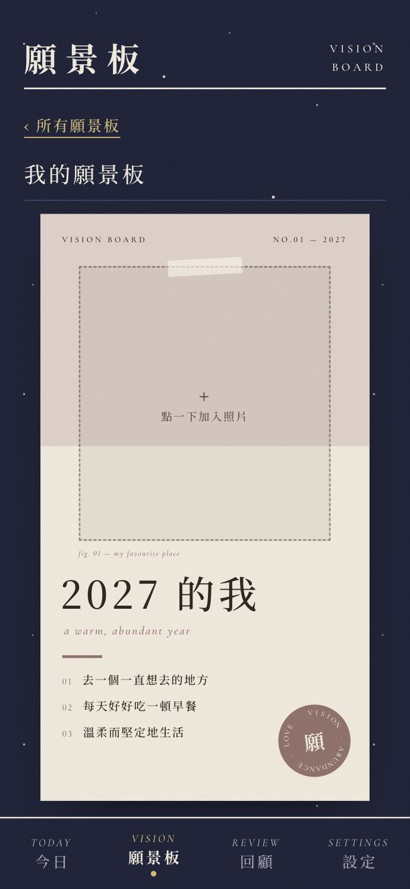
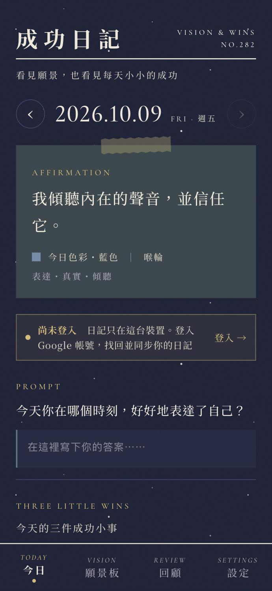
01 / 自我覺察
成功日記Success Journal
我們總是記得自己哪裡做不好，
卻忘了自己每天都在前進。
- 每天寫下 3 件小成功
- 每日色彩、肯定語與溫柔提問
- 雜誌風願景板，一鍵存成手機桌布
- 回顧你的成功類型與累積
- Google 登入，自動雲端同步
- 形式
- 網頁 App
- 開發
- AI 協作開發
- 價格
- 免費
Jasmine TsaiChakra Reading · AI Tools for Healers
脈輪解讀療癒師 × 懂身心靈的 AI 工具開發者。從理解自己的模式，到把陪伴做成每天會打開的工具。
Chapter I
免費使用，加到手機主畫面就能開始
這三個工具，都是我把陪伴與覺察做成產品的實驗，也是我為身心靈工作者做工具的起點。從構想、介面設計到上線，用 AI 協作一人完成。


01 / 自我覺察
我們總是記得自己哪裡做不好，
卻忘了自己每天都在前進。
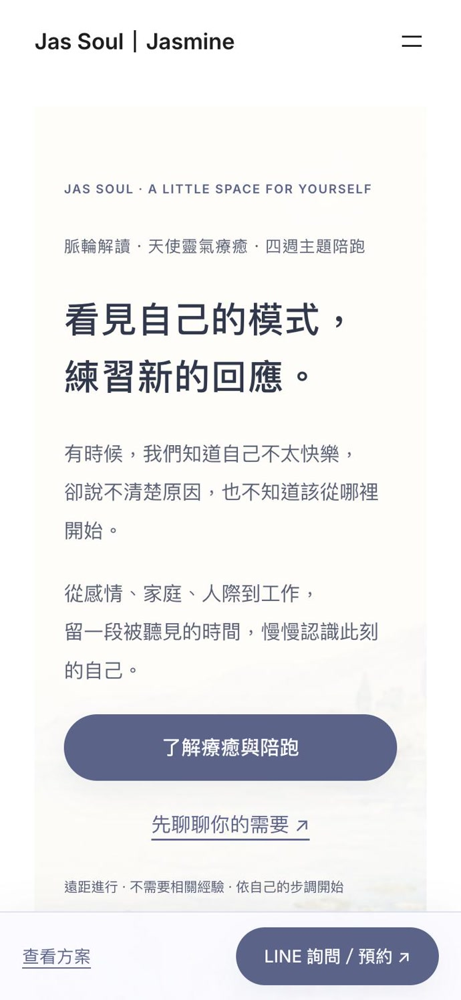
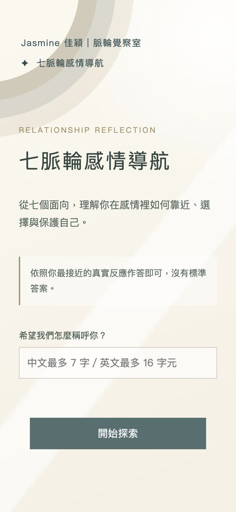
02 / 名單磁鐵
從七個面向，理解你在感情裡
如何靠近、選擇與保護自己。
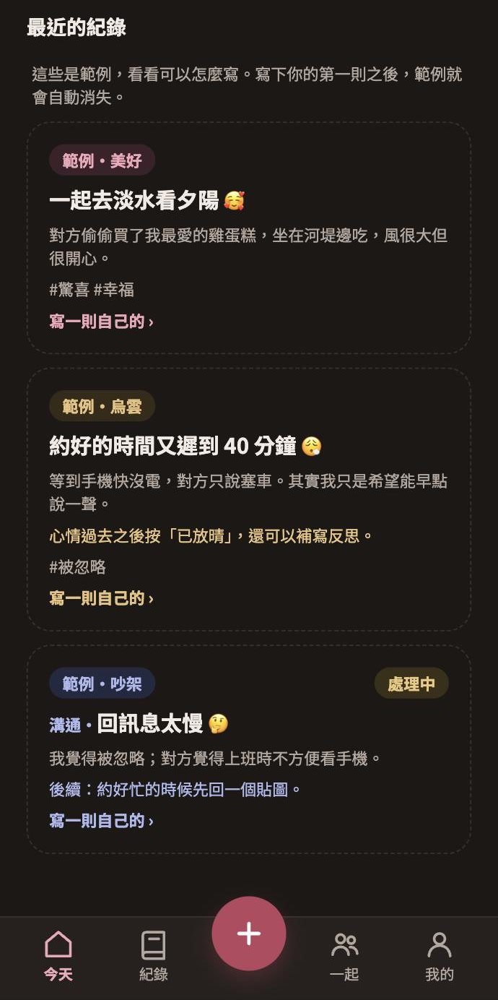
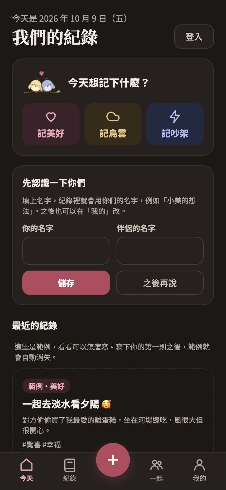
03 / 關係經營
記下一起的美好時刻，
也溫柔地面對烏雲與吵架。
Chapter II
遠距一對一・不需要相關經驗
看見自己的模式，
練習新的回應。
有時候，我們知道自己不太快樂，卻說不清楚原因，也不知道該從哪裡開始。從感情、家庭、人際到工作，留一段被聽見的時間，慢慢認識此刻的自己。
在靠近與不安之間拉扯，想理解自己真正期待的是什麼。
想照顧關係，也想留一點空間給自己。
習慣先答應、先體諒，想練習說出自己的需要。
努力卻感到停滯，只知道想有些改變。
See yourself
可選整體解讀，或聚焦感情、家庭、人際、工作其中一個主題。
Practice change
工作限制・與人相處
「心輪像太陽，但可以選擇用不同的太陽模式開啟。」
自我價值・放下苛責
「終於不用在明明過度努力的情況下，還以為是不夠努力。」
情緒覺察・卸下防備
「遠端對談有種可以卸下防備，再更坦誠地面對自己的感覺。」
節錄自服務後回饋問卷，個人資訊已隱去。每個人的體驗與收穫不同。
Chapter III
我的觀點與生活，企劃・口說・剪輯一手包辦
職場觀點口說：拆解 AI 時代的工作節奏與休息。
1080×19201:0130 fps
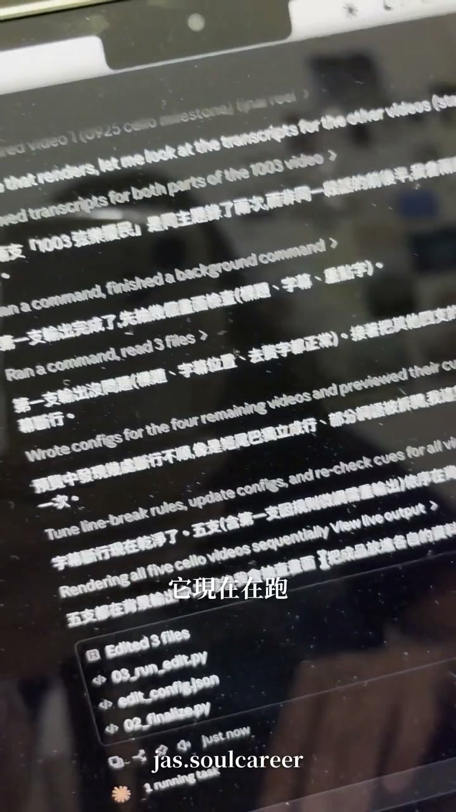
把剪輯流程自動化的幕後：一次處理四支影片。
1080×19200:2230 fps
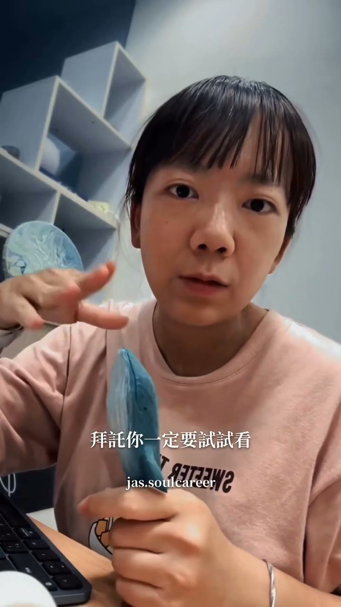
自己的產品自己介紹：把功能轉譯成日常情境。
1080×19201:1430 fps
戶外紀錄 × 個人敘事，把生活經驗變成觀點。
1080×19200:4030 fps
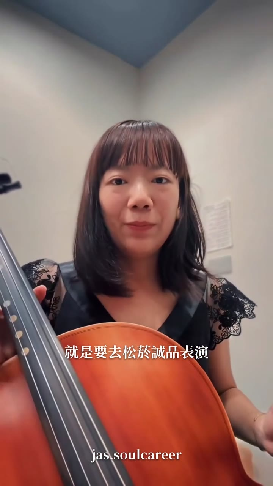
成人學琴的真實紀錄，個人品牌的生活面。
1080×19200:4630 fps
Chapter IV
所以我做的東西，知道怎麼被看見
0萬
Threads 3 個月累積瀏覽
0+
堂線上課程從 0 打造
0篇
SEO 內容主導產出
0萬
品牌社群總觸及
曾任科技業產品行銷與產品經理，經營過個人品牌、企業社群與線上課程。這些經驗讓我做每一個工具時，從第一天就在想：誰會用？怎麼被看見？
01 / 個人品牌
以職場觀點經營個人帳號，用選題企劃與標題設計，讓內容觸及非粉絲。爆文〈向上管理的 7 個潛規則〉單篇 8.2 萬瀏覽。
選題企劃・標題設計・內文撰寫・數據洞察
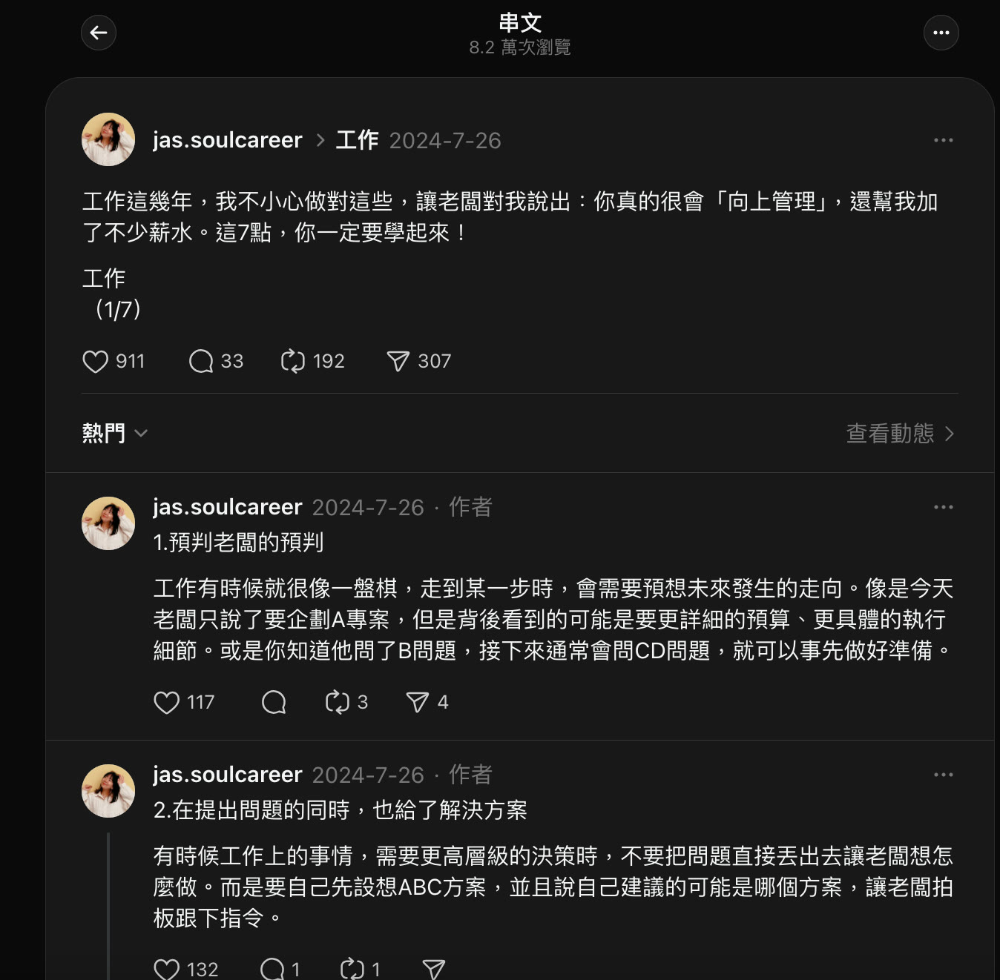
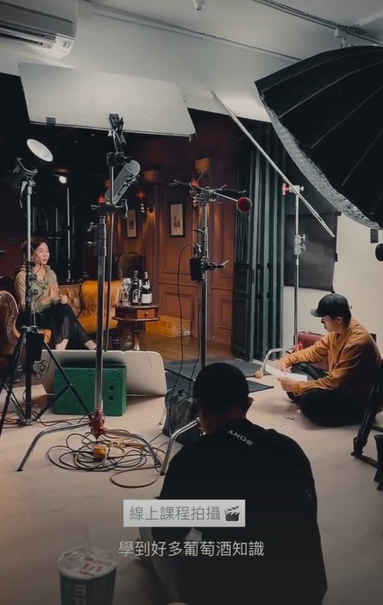
02 / 課程製作
從主題命名、模組結構到銷售頁文案，與設計師、攝影團隊協作落地。類型涵蓋 AI、求職、數據、行銷、葡萄酒等。
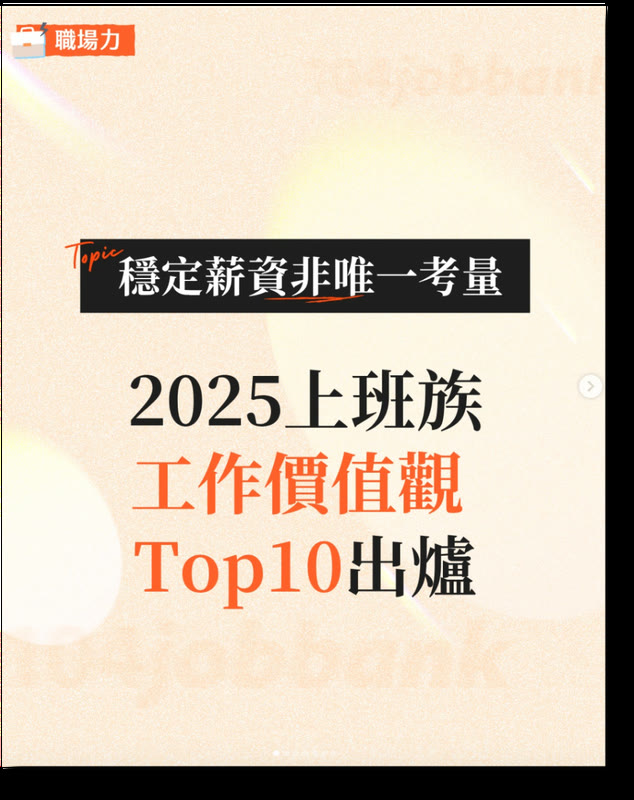
03 / 品牌社群
從內部報告提煉受眾在意的切角，轉譯成有共鳴的社群內容。LinkedIn 獵才顧問貼文互動率 27.2%，遠高於平台平均。
04 / SEO 內容
從內容規劃、撰寫到帶領 3 位實習夥伴，聚焦 ChatGPT 與 AI 工具熱門關鍵字，再搭配內容策展活動導入會員。
96親自撰寫
312帶領實習夥伴
監製、提詞、攝影協作到現場互動建議：課程不只寫在簡報上。
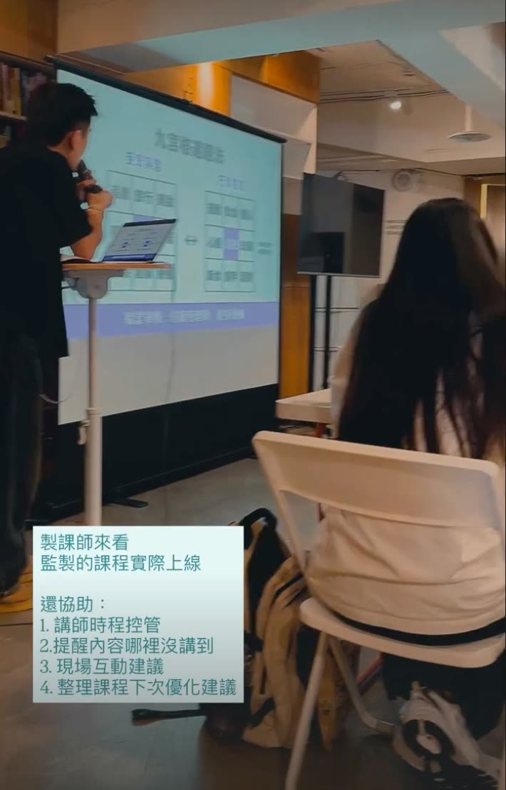
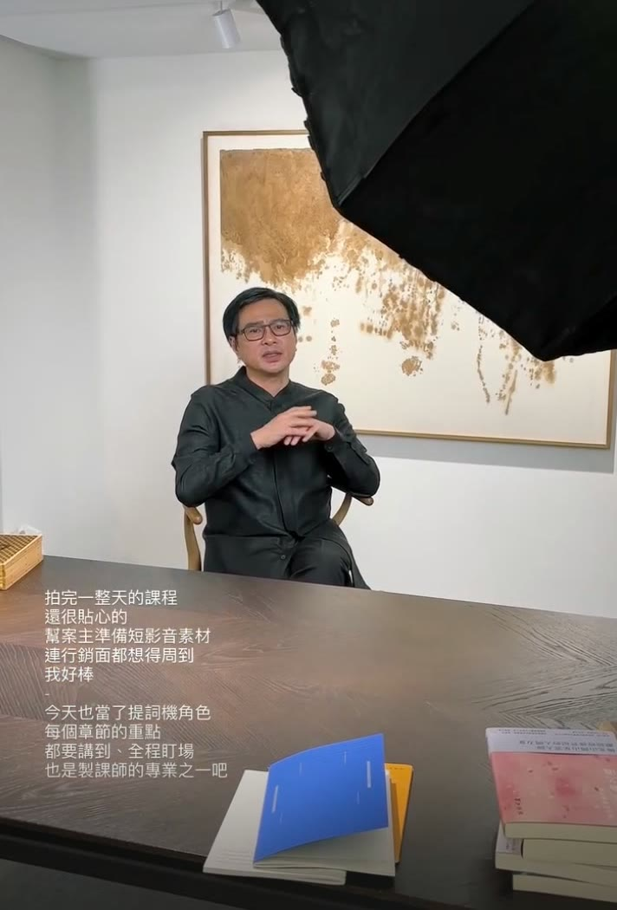
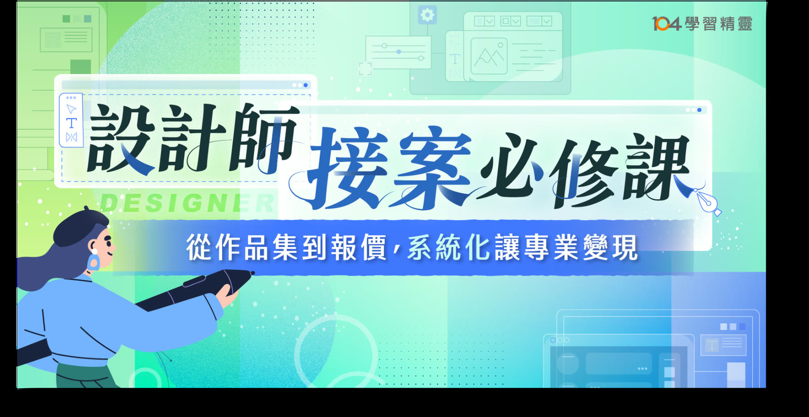
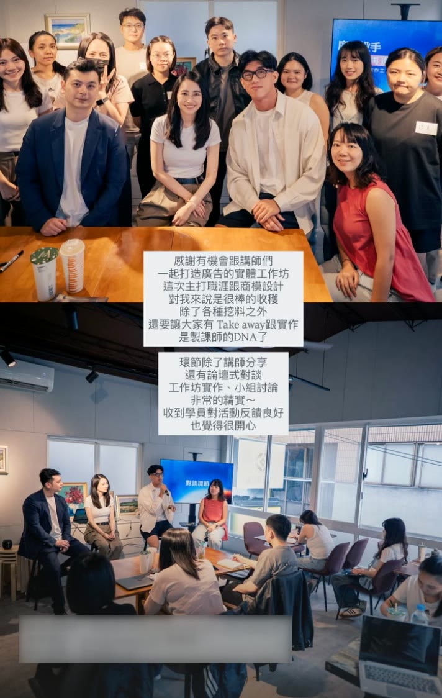
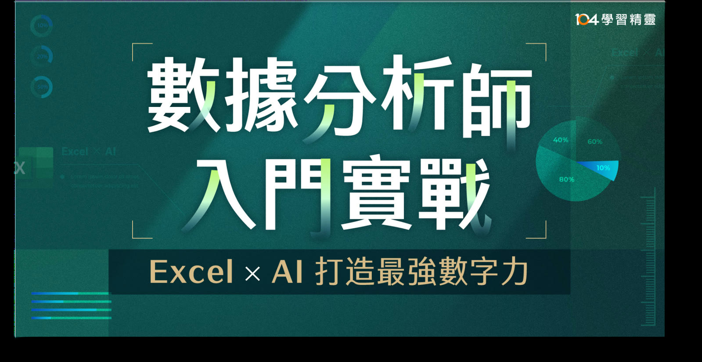
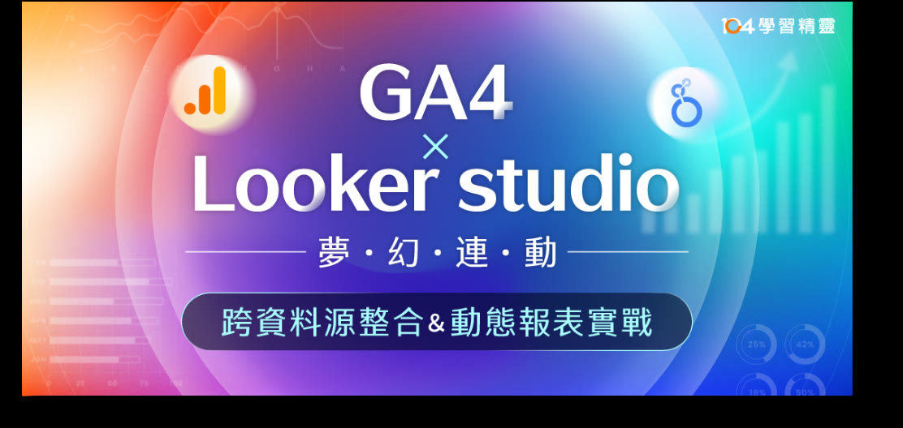
Chapter V
我曾在科技業擔任產品行銷與產品經理，後來協助講師打造線上課程。在一次意外的經驗裡，我開始接觸通靈接訊，也認識了自己感受訊息、轉譯與解讀的天賦。
現在我做兩件事：用脈輪解讀陪人看見自己的模式，也用 AI 把這些陪伴做成每天打開的工具。當我們開始看見自己，改變也就有了可以開始的地方。
解讀時接收意象、畫面與訊息，再轉譯成可以一起討論的理解。你的感受和看法，同樣重要。
知道療癒師和個案需要什麼，也有產品經理的背景，用 AI 一個人從構想做到上線，已經完成三個產品。
參與 20+ 門線上課程規劃，擅長把專業整理成好懂、好用、學得完的結構。
脈輪解讀天使靈氣療癒AI 協作開發網頁 App課程設計GA4社群經營
Chapter VI
不確定適合哪一種？先聊聊你的需要
AI Tools for Healers New
專為療癒師、教練、身心靈講師
把你的陪伴，延伸到個案每天的生活裡。
個人頁＋名單磁鐵測驗＋LINE 預約動線：讓陌生人從認識你到預約，一路順暢。內容由你提供，我用訪談引導你整理。
釐清你的服務適合搭配什麼工具、功能範圍，以及怎麼放進現有的服務流程。
脈輪、能量、牌卡、性格測驗：像「七脈輪感情導航」，讓陌生人先認識你。
覺察日記、練習卡、冥想打卡，讓兩次會談之間的練習持續下去。
像「成功日記」一樣：登入、雲端同步，加到手機主畫面就能用。
Chakra Reading
留一段被聽見的時間，慢慢認識此刻的自己。
約 2 小時：遠距天使靈氣療癒與解讀，加上 LINE 語音對談。
聚焦一個議題，每週 50 分鐘，把理解轉成生活裡的小練習。
從看見自己的狀態開始，接續四週，把覺察帶進生活。
只想安靜休息：1 小時遠距療癒，不含解讀與對談。
Course Production
陪身心靈與療癒工作者，把經驗做成一堂線上課。
有構想但還沒釐清：用結構化提問找出課程亮點與定位。
已有大綱：優化模組、撰寫對外文案、提供錄課與剪輯建議。
從市場問卷、命名定位、文案、視覺到時程管理，6–12 週。
擔任製課專案經理：規劃時程、協調講師、設計師與攝影剪輯團隊，一路追蹤到順利上架。
透過 LINE 分享近況或想法
確認方案、時間與內容
依你的步調進行
一起看看改變，再調整方向